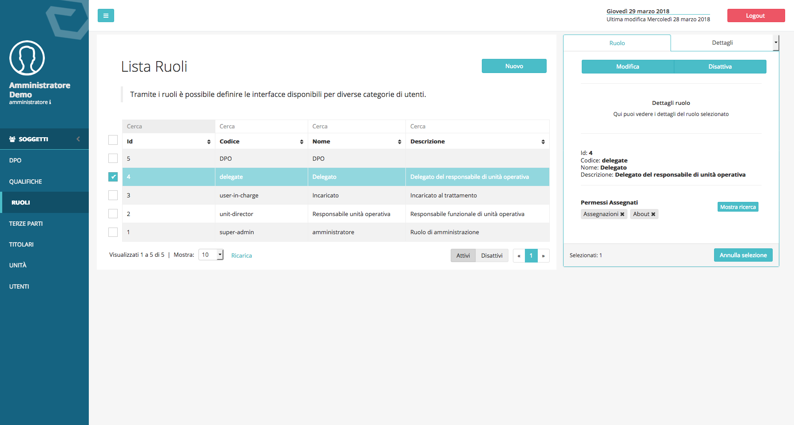
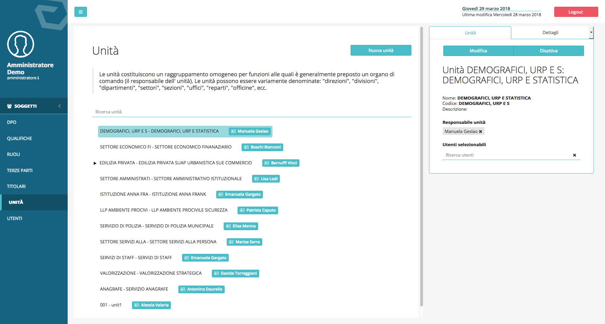

Privilegi, ruoli e unità¶
Privilegi utenti e ruoli predefiniti¶
Per impostazione predefinita DPM viene fornito con cinque tipologie di utenti a cui corrispondono privilegi applicativi diversi. I privilegi corrispondono alla possibilità o mento di usufruire di funzionalità dell’applicativo presenti nel menu posizionato sulla sinistra dell’interfaccia grafica:
- Amministratore: utente con privilegi massimi;
- DPO: Dashboard, Registro dei trattamenti, Analisi d’impatto, Asset e Soggetti.
- Responsabile unità: Registro dei trattamenti, analisi d’impatto, assegnazioni, documenti.
- Delegato: Dashboard dell’incaricato, assegnazioni.
- Incaricato: Dashboard dell’incaricato.
Gestione dei privilegi degli utenti¶
Gli utenti con ruoli di amministrazione possono modificare i privilegi correlati agli altri ruoli ed inserire nuovi ruoli configurandone permessi privilegi in maniera granulare, tramite l’interfaccia visualizzabile facendo clic sul menu: Soggetti → Ruoli.
{kind=link}
Gestione delle unità organizzative e dei loro responsabili¶
Le unità vengono gestite dall’interfaccia a cui è possibile accedere dalla voce di menu: Soggetti → Unità. Da qui è possibile inserire unità e sotto-unità e correlare i Responsabili interni alle rispettive unità e sotto-unità.
{kind=link}
Per correlare unità Unità responsabili/referenti, dal menu principale:
- Selezionare la voce Unità dal menu Soggetti -> Unità
- Selezionare l’unità su cui si vuole andare ad agire
- Selezionare il responsabile dal menu facendo clic sul campo di imput e selezionando un utente dal menu a tendina.
{kind=link}